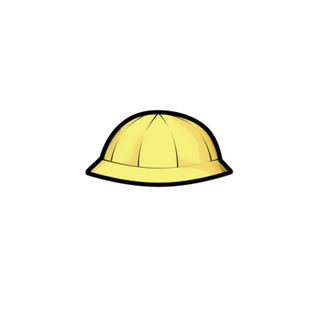
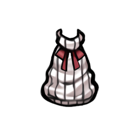
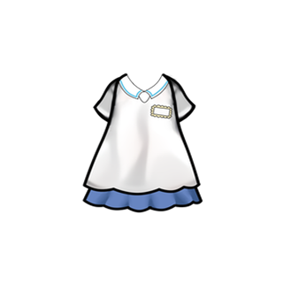

魅狐儿童帽Kurin_Kid_Hat

Kurin/Apparel/ChildHat/Texture
科研 Kurin_ApparelT1
为魅狐儿童设计的帽子
Kurin_Kid_Hat
Kurin/Apparel/ChildHat/Texture
科研 Kurin_ApparelT1
为魅狐儿童设计的帽子
Kurin_Kid_Sweater
Kurin/Apparel/ChildSweater/Texture
科研 Kurin_ApparelT1
魅狐儿童在寒冷的日子里穿的保暖毛衣。
Kurin_OnSkin_Kid_Shirt
Kurin/Apparel/ChildDress/Texture
科研 Kurin_ApparelT1
专为魅狐儿童设计的连衣裙